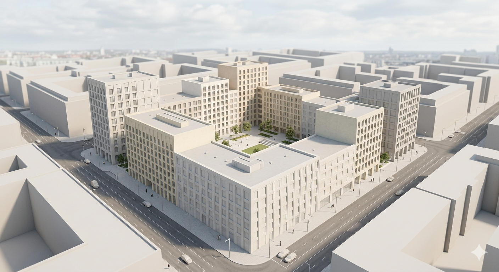
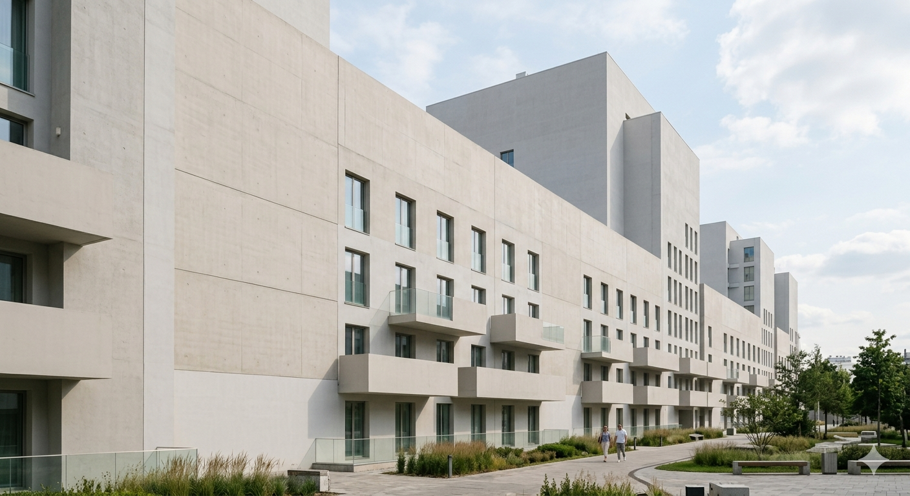
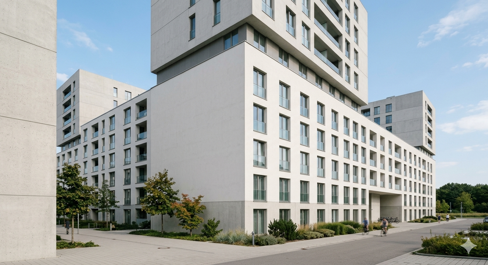

Модель территории
Функциональное зонирование, улично-дорожная структура, общественные пространства.

Направление для девелоперских задач среднего масштаба: жилые группы, кварталы, mixed-use сценарии и поэтапная реализация территории.
тип
девелопмент
масштаб
5–50 га
фокус
ТЭП + phasing

Функциональное зонирование, улично-дорожная структура, общественные пространства.
Расчет ключевых метрик для нескольких сценариев с визуальным сравнением.
Фасадные принципы, масштабирование корпусов, визуальный код квартала.
Понятный пакет для внутреннего одобрения и презентации партнерам проекта.
Собираем ограничения, данные по контексту, транспорту и инженерным вводным.
Формируем варианты с разной плотностью, программой и структурой очередей.
Сверяем архитектуру и экономику, выбираем рабочую стратегию запуска.
Передаем финальную схему и комплект для дальнейшей реализации.
Композиция квартала и публичных пространств.

Масштабирование жилых блоков и дворовых сценариев.
Интеграция уличного фронта и городской активности.